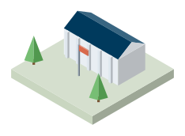

Executive summary
R&D does not relate to jobs in the same way across the ICT industry. This paper uses the World 2500 Scoreboard for 2014 to 2023, which covers the world's top R&D investors in 55 countries, and sorts ICT firms into three layers with non-ICT firms as the comparison. The widest sample has 21,279 firm-years from 4,564 firms.
Hardware and software firms add fewer jobs per euro of R&D than non-ICT firms. In the same year, €1 million of R&D goes with 9.35 more employees in non-ICT firms. The slope is 10.01 lower in Layer 1 and 10.21 lower in Layer 2, which leaves both near zero. One year on the gaps narrow to 4.13 and 6.95, and after two years neither is significant.
The content layer stands apart only in the same year. Its slope is 11.81 higher in that year, and the differences at one, two, and three years are not significant, at 2.354, 1.783, and −1.794. Same-year estimates may partly reflect expanding firms that raise payroll and R&D together.
Country income works against the paper's hypothesis. The same-year slope is 19.47 in developing countries and 10.31 lower in developed ones. These are associations, because no model isolates an outside change in R&D, and tests find serial correlation in every specification.
How the study works
- R&D is recordedFirm spending in million euros, with lags of up to three years
 Firms are groupedThree ICT layers and non-ICT firms
Firms are groupedThree ICT layers and non-ICT firms
Jobs are countedEmployees per firm, with net sales, capex, and profit as controls Contexts are comparedFirms in developed and developing countries
Contexts are comparedFirms in developed and developing countries
The question
Global R&D spending reached a record €1,249.7 billion in 2022, led by ICT. Its effect on jobs is disputed. Frey and Osborne estimate that 47 percent of US jobs are at high risk of automation, while IT services employment grew 7 percent a year between 2000 and 2022, against 1 percent for total employment.
ICT is also far from uniform, and few studies separate its layers. This paper asks whether the link between R&D and employment differs across layers, how long it takes to appear, and whether it differs between developed and developing countries. It expects a positive link in ICT, differences across layers, and a stronger link in developed countries.
Data and method
Firm records come from the World 2500 Scoreboard, with R&D, net sales, capital expenditure, and profit in million euros and employment as a headcount. Layers follow Heeks (2008) with modifications. In the team's presentation, Layer 1 covers electronic and technology hardware, Layer 2 covers software and support services, and Layer 3 covers media and telecommunications.
The models use firm and year fixed effects, and each regression enters R&D at a single lag from zero to three years. Interaction terms measure the slope gap against non-ICT firms. Hausman tests favour fixed effects in all three specifications, with chi-squared values of 98.78, 128.20, and 121.04. The sample shrinks with each lag, to 10,247 firm-years at lag 3, so columns do not cover identical firms.
Findings
The job gap with non-ICT firms closes within two years
Difference from non-ICT firms in employees per €1 million of R&D, with 95 percent confidence intervals.
| Term | No lag | Lag 1 | Lag 2 | Lag 3 |
|---|---|---|---|---|
| Baseline: R&D ‡ | 3.744*** (0.311) | 6.263*** (0.319) | 1.133*** (0.379) | 2.112*** (0.381) |
| Model 2: R&D, non-ICT | 9.347*** (0.581) | 9.274*** (0.516) | −1.583** (0.617) | 0.629 (0.585) |
| Layer 1 × R&D | −10.01*** (0.806) | −4.125*** (0.818) | −1.644 (1.066) | −1.038 (1.124) |
| Layer 2 × R&D | −10.21*** (0.765) | −6.945*** (0.753) | 0.310 (0.932) | −0.788 (0.965) |
| Layer 3 × R&D | 11.81*** (3.324) | 2.354 (1.964) | 1.783 (2.298) | −1.794 (2.729) |
| Model 3: R&D, developing | 19.47*** (1.292) | 10.41*** (1.139) | −1.941 (1.418) | 5.296*** (1.639) |
| R&D × developed | −10.31*** (1.198) | −1.169 (1.044) | 0.367 (1.306) | −4.792*** (1.572) |
| Observations | 21,279 | 15,761 | 12,777 | 10,247 |
| Firms | 4,564 | 3,427 | 2,920 | 2,481 |
Outcome is number of employees. R&D is in million euros. Non-ICT firms are the reference for layer terms. Standard errors in parentheses. *** p < 0.01, ** p < 0.05, * p < 0.1. ‡ Labelled fixed effects in the paper, but the no-lag column matches the random-effects output in its appendix, which the Hausman test rejects. The fixed-effects R&D estimate there is 2.724, with no standard error published.
Authors' estimates from the World 2500 Scoreboard, 2014–2023. Model 2 fixed-effects regressions with year effects and controls for net sales, capital expenditure, and profit. Observations are 21,279 with no lag, 15,761 at lag 1, 12,777 at lag 2, and 10,247 at lag 3.
What the three layers show

Layer 1: infrastructure
Adding the terms, the same-year slope is about −0.66 employees per €1 million, and about 5.15 at lag 1, which is still positive but below non-ICT firms. The gap is not significant at lags 2 and 3. The paper reads the gap as automation, which the data do not measure.
Layer 2: software and services
The gap is −10.21 in the same year and −6.945 a year later. It is not significant at lag 2 (0.310) or lag 3 (−0.788), so the table shows no long-term gain. The paper suggests R&D here aims at operational efficiency.
Layer 3: content
The same-year slope is about 21.2 employees per €1 million, though with a wide standard error of 3.324 on the gap. No later lag differs significantly from non-ICT firms. In the presentation this layer also includes telecommunications, so it is broader than digital content.
The one-year peak depends on the specification
The baseline table gives 3.744, 6.263, 1.133, and 2.112 employees per €1 million at lags zero to three, which the paper reads as a peak after one year. In Model 2 the first two coefficients are almost equal, at 9.347 and 9.274, and the third is −1.583. In Model 3 they fall from 19.47 to 10.41. Each lag is a separate regression on a smaller sample, so these numbers do not trace one group of firms over time.
Developed-country firms show a weaker link, which runs against the hypothesis
The same-year slope is 19.47 in developing countries and about 9.16 in developed ones, so it stays positive in both. The gap is not significant at lag 1 (−1.169, standard error 1.044) or lag 2 (0.367, standard error 1.306), and returns at lag 3 at −4.792. The third hypothesis expected a stronger link in developed countries, and the table does not support it. VIFs in the appendix for this model reach 15.66 for R&D and 11.84 for the interaction, so the split is imprecise.
Sales and capital spending move with jobs, and profit rarely does
In Model 2 the net sales coefficient runs from 0.626 to 1.080 and capital expenditure from 1.441 to 3.022, all significant at 1 percent. Profit is significant only at lag 1, at 0.201. The paper suggests profits may go to dividends or to non-labour reinvestment.
Interpretation
The direct finding is a pattern in the slopes. Hardware and software firms show a much flatter link between R&D and headcount than non-ICT firms in the same year and the next, and the gap then fades. Layer 3's higher slope holds only in the same year.
The paper reads this as creative destruction: automation in Layer 1, efficiency in Layer 2, and new content work in Layer 3. But the data contain no measure of automation, occupations, or content jobs, so these remain explanations to test. Headcount and R&D may also rise together because a firm is expanding, which weighs most on same-year estimates.
Policy implications
- Support content and creative industries. Use tax incentives, grants, and subsidies to stimulate innovation and job creation in Layer 3.
- Retrain infrastructure workers. Fund retraining and upskilling so that Layer 1 workers can move into emerging technical roles.
- Broaden services in Layer 2. Back service diversification and innovation hubs to offset short-term job losses.
- Narrow the digital divide. Improve ICT infrastructure and digital literacy, especially in developing countries, and sustain public-private partnerships on R&D.
Limitations
The sample covers only the largest R&D investors, and firms enter and leave the list, so firm counts fall from 4,564 to 2,481 at lag 3. Serial correlation tests reject the null in all three models, and the regression tables do not state that standard errors are corrected for this, so significance may be overstated. Layer and country dummies are reported in a fixed-effects model even though they rarely change within a firm, and at lag 3 they reach −47,865 and 60,964 employees, which suggests a few firms drive them. The policy proposals for Layers 2 and 3 lean on long-term job gains that the table does not show.
How to cite
Paramitha, A. A. P., Istiqomah, A. A., & Pratama, M. I. (2025). The impact of R&D investments on employment absorption: A comparative analysis across ICT layers. Paper presented at the 22nd Economix, Universitas Indonesia.
Open the paper folder. Other work is in the research list.